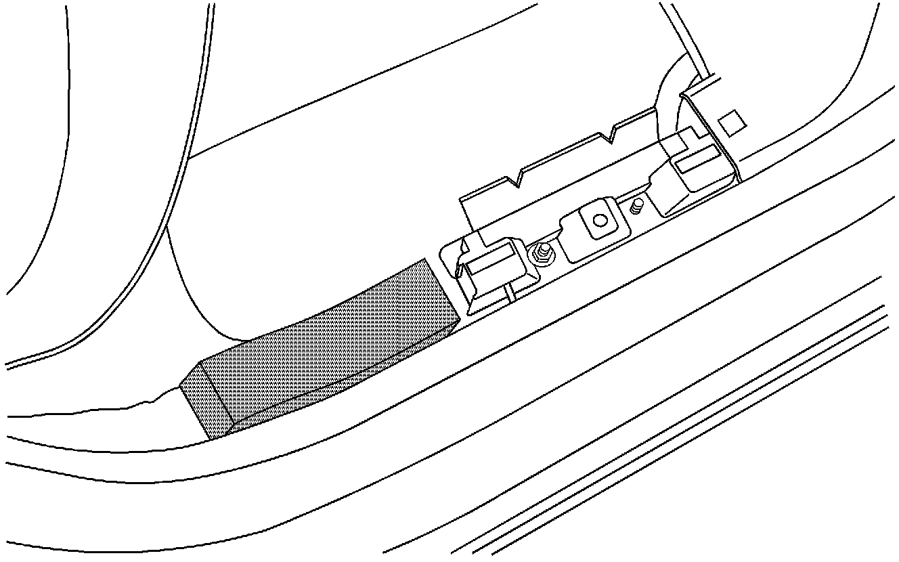
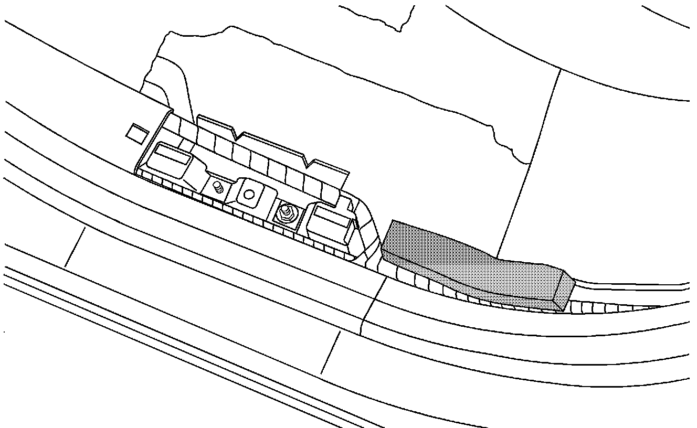
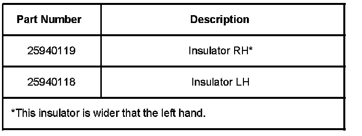
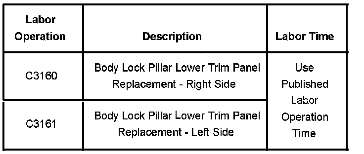

Interior - Gap Between Weatherstrip and Lower Body Panel
Bulletin No.: 08-08-110-003Date: February 21, 2008
TECHNICAL
Subject:
Gap Between Primary Weatherstrip and Lower Body Lock Pillar Trim Panel (Install Foam Block)
Models:
2007-2008 Cadillac Escalade
2007-2008 Chevrolet Tahoe
2007-2008 GMC Yukon
Condition
Some customers may comment that there is a gap between the weatherstrip and the lower body lock pillar trim panel ("C" pillar) at the base.
Cause
The door weatherstrip may have dropped down below the body lock pillar trim panel instead of sitting on top of it.
Correction
Inserting the foam block below will keep the weatherstrip from dropping down below the body lock pillar trim panel.

Remove the weatherstrip and molding at the base of the "C" pillar just enough to insert the foam block.

Bend the foam into a "banana" shape to match the floor plan curvature.
Place the foam behind the electrical channel. Leave room for the harness.
Note that the front inside corner will ride up onto the sealant bead.
Press/rub the foam to ensure a good bond.
Reinstall the trim and the weatherstrip.

Parts Information
There may be two parts per package although only one piece is required per side. GMSPO is working on this and it should be corrected shortly.
Warranty Information

For vehicles repaired under warranty, use the table.

Disclaimer